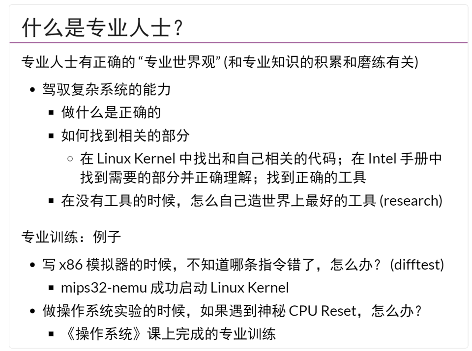
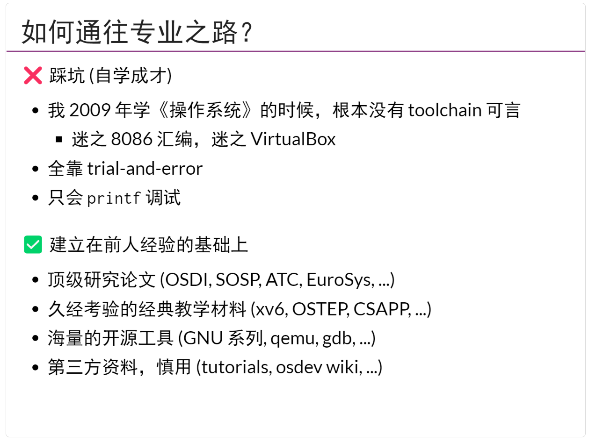
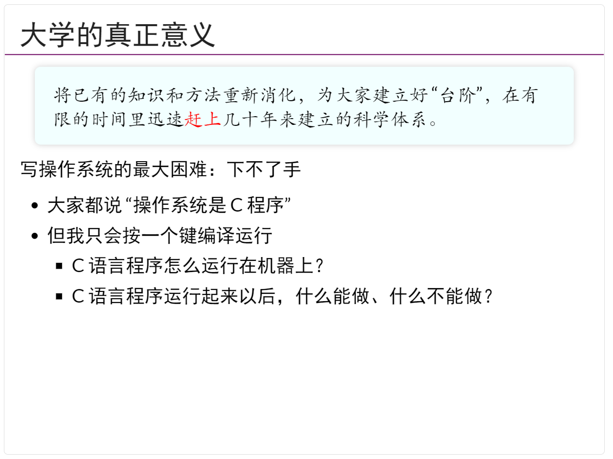
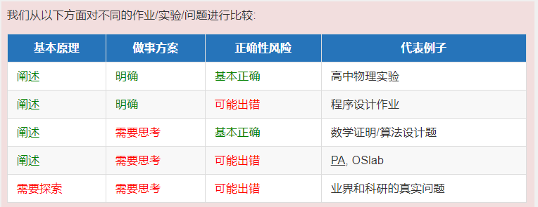
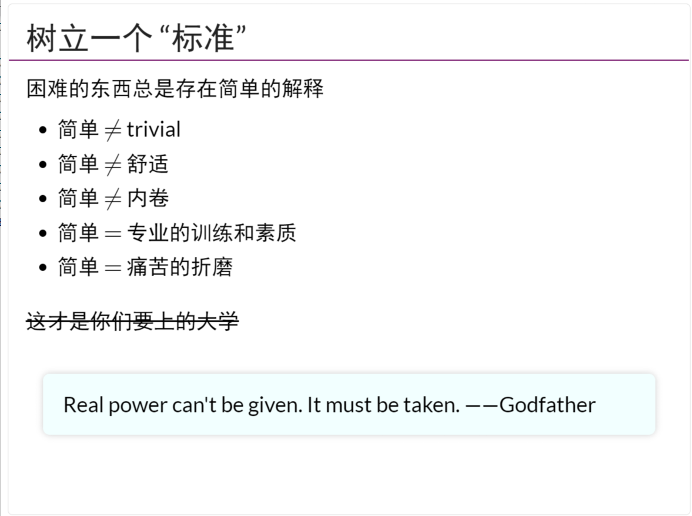
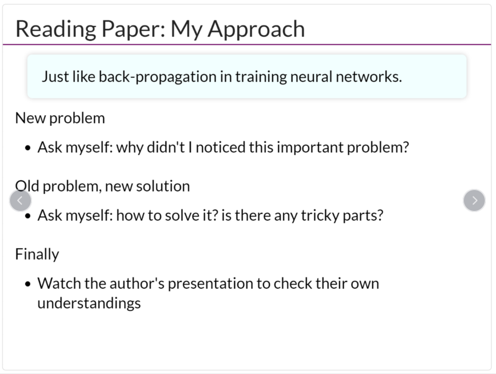
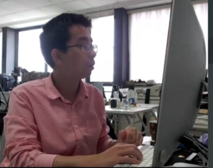
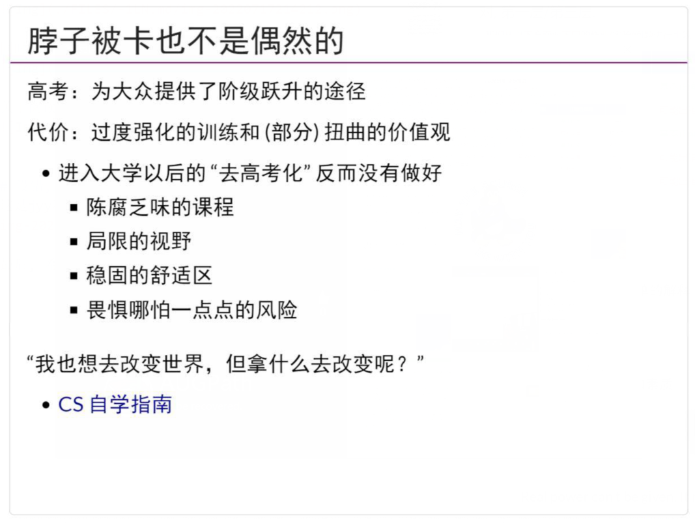

这个资料, 我们少谈一点数学. 我会找一些最近看到的比较震撼人心/好玩/在幽默中带着一丝无奈的文章贴出来. 如果比较好奇的话可以点进去链接看看.
当然, 还是像上一回补充资料说的, 不用完全看明白. 一些专业名词你可能会很是不解. 没关系, 那些内容往往是举的一些例子, 看不懂也无妨.
希望你在阅读完之后, 在未来的生活中, 慢慢体会"为什么要努力要求自己, 对自己的要求高一点".
谢谢你.
作者：南京大学计算机科学与技术系程序设计语言（PL）方向选修课程《软件分析》的主讲教师李樾老师 著作权归作者所有。
我在南大上《软件分析》的第一节课时，会有一个传统，就是简单地和学生们聊聊人生，这么做的动机是我发现现在的很多学生都很浮躁，没有深入思考或塑造过自己的价值观，个人价值观被当前的社会价值取向所左右，甚至裹挟，其结果是丰厚的年薪和体面的工作是衡量其人生是否成功的唯二标准，为此不惜加班熬夜，在资本铺出的路上透支狂奔，貌似只有拥有了自己的房子才可以开始享有人生，貌似只有在周遭的环境中脱颖而出才能证明自己不虚此生，来不及看风景，来不及顾家人，仿佛生活没有给你留什么时间，却又花大量时间去惆怅为什么生活使你艰难向前。接下来，请允许我开始正经起来，把送给南大《软件分析》课程学生的三句话也送给你，希望你能“不要浮躁，认识自己，重拾自信”，希望你能找到自己的路，快乐向前。
“我觉得自己明明很努力了，却还是学不懂，看到同学们在群里讨论着自己看不懂的专业知识，时常迷茫自己今后该何去何从”；“我周围的同学又是参加比赛获奖，又是科研经历丰富，我毕业后一点竞争优势也没有”；“我的同门发表了好多篇论文，可我什么都没有，不敢再想当初读研时的各种憧憬，现在只想着能毕业，给家人一个交代就好”。浮躁，往往来源于与旁人的比较，有意也好，无意也罢，是具有社会属性的我们难以避免的人之常情。然而，如果从比较中无法再获得正向激励，反而发现其开始对自信打击，使自我怀疑，我们就需要开始重新审视自己面对生活的态度了。学不懂一门课程，就慢慢学，多会做一道题，多弄懂一个知识点，都比之前的自己更好了，就值得肯定；人生很长，不能因为毕业时没有优势就同时否认毕业几年后的自己，如果仅仅为此就放弃了当下的努力，桎梏不前，那理由再多也只不过是掩饰自己懒惰的借口；同门发表的论文多而自己没有论文，并不代表你不优秀，它与研究的课题、幸运以及同门特别优秀都有关系，如果真心付出努力后依然收效甚微，就不要妄自菲薄，虽然五年对读博时的你很长，却也不过是你几年后与好友在饭桌闲聊时谈及的一段经历罢了。这个世界的存在是唯物的，但是如何看待她的存在却是唯心的。不要再同旁人比较了，很多时候这一辈子这么累就是因为人生路上一直看着别人不看路才磕磕绊绊的。从当下浮躁的集体价值观中逃出来吧，心远地自偏，才能看清脚下的路，这路上实际上只有你，要比也只和自己比，如此，很多东西便会释然了。
人生其实有一门课，就是不断地发掘自己，认识自己，看看什么事情可以让自己愿意花时间和精力去做，做的过程是快乐的，做完后是欣慰满足的。很多时候兴趣的养成，是靠因缘际遇碰到了，你花时间去做发现自己并不排斥，然后一路做下来，越来越专业，受到越来越多来自他人的正向反馈与自我的肯定，也就越来越愿意花时间去做，由此进入了正向的循环。但是需要注意的是，这个“因缘际遇”碰到的事情，不一定是你大学学的专业。很多时候，我们被生活推着走，貌似18年的努力就是为了能上一个好大学，选择一个好专业。但是什么是好专业？大家眼中的好专业，就是好专业吗？现在的大学教育培养更多的是专业技能，缺失了很多能够让人自省、自察、自悟的人文关怀，社会的浮躁也多源于此，我曾在《浅谈国内高校编程语言教育》一文中写到：“这些对兴趣的专注和纯粹本应该是大学生在自己专业上该有的年轻的、百舸争流的样貌，如今却被年薪、房价和社会的物化价值观所左右。如果连我们国家顶尖大学的教育都摆脱不了物欲横流的浮躁，又如何完成国家民族集体人格的进一步塑造？”我真心希望大家最终都能找到自己心中的“兴趣”，哪怕你现在学着计算机，以后却只想开一家奶茶店。这也许需要很长的一段时间，但是这一切却又很值得，寻找它的路上，你会更加了解自己，更加怡然自得，因为你一直在修改着属于自己幸福的定义。
相信每一个同学都曾有自信的时刻，自信的时候不会多想，只想去做，只想做好。既然曾经拥有过，它就一直还在，也许你因曾经历的人或事将它埋在了心底，怯于外露，但它终究是属于你的。如果能“不浮躁”，如果开始做好“认识自己”的准备，就请把那份自信重拾起来，微笑着上路吧。
  
7月8日左右, 我溜到jyy那里看NJU的CSOpenDay, 其中提到了一个"劝退信"的东西. 大体来说就是要从事科研, 有哪些要求.
于是为了顺利让我的本科教育更加的"符合要求", 我发了一封信, 给jyy.
On Jul 8, 2022, at 15:11, Micoael_Primo <micoael@qq.com> wrote: 老师您好, 马上要成为大一新生了. 想看看劝退信, 好让我稍微知道一点应该掌握哪些基本素养哈哈 谢谢老师!(试着发一下, 理论上可以收到.) shzaiz
7月11日, 我收到了来信, 全文如下:
同学你好！
因为每年都会收到相当多的申请 (也有一些看起来是海投的模板申请)，所以我首先给所有联系我读硕/读博同学统一的回复，其中包括一些可能对你有 (劝) 用 (退) 的信息，可以帮助你初步判断自己读研的定位。
首先是我的研究方向：目前我的研究将逐渐收束到程序合成 (program synthesis)，即自动用程序生成满足需求的代码，听起来有点不可思议！本质上这是一个搜索问题：你从最简单的程序开始枚举，总有一天会碰到一个满足需求的；但想要做得好就没那么容易了。除了程序合成，偶尔还会有一些在系统软件 (甚至是硬件，例如 CPU) 上的应用，延续之前的软件测试方面的工作。所以如果你的兴趣是一些Android 相关的工作，之后我们可能只会保留一些偏系统 (例如 hack Android Runtime) 的工作了。如果你对我的研究方向有兴趣，欢迎你来聊一聊！ 然后，我对招收同学的唯一标准是 “会编程”。这主要包括：
- 能够较为熟练地、在手册和互联网的指导下使用 Shell 和常用的命令行工具 (例如 tmux、正则表达式等)
- 理解 Git 的核心概念，能够良好了解并遵循开源软件开发的流程，例如正确使用 gitignore、使用 Markdown 撰写文档、维护Github Pages 等
- 掌握一门 Python 这样的脚本语言，能够简化日常工作
- 掌握一门 “课外” 的现代编程语言 (现代 C++/JavaScript, Haskell, Kotlin, Scala, Rust, ...)，并能作为主力编程语言使用
- 一个并不必要但巨大的加分项是你不惧怕中等规模的代码项目 (例如 CPython, OpenJDK, Linux Kernel, ...)。你不需要了解它们的全部，但你如果能不畏惧地调试它们，并能从中理出一些头绪，这已经很了不起了！
除此之外，如果你在某件事情上认为自己做得十分出众地好，你就很可能拥有能够作出了不起工作的潜力：在课堂之外，写过一个你认为十分了不起的代码、独立解决过一个你认为十分困难的问题、在一门非常有挑战性的课程上取得好成绩等。你不妨考虑一下你在大学期间认为最 “了不起” 的一件事，然后我们可以聊一聊。
最后，我也要很抱歉 (无奈) 地告诉大家，今天的学术界惊人的内卷，因此导师招人也必须满足 “利益最大化”，把课程丢上网已经算是最大程度的 “做慈善” 了：学生一方面是被培养的对象，另一方面 (更重要的) 也是导师解决困难的研究问题或者完成项目的打手。只有目标匹配，导师的付出才有回报，而 “学习曲线过长无法产出” 的学生对于我们来说是非常难受的 “负资产”
- 对于博士生：你的竞争对手是全世界某个研究领域里最聪明的一些人 (和一些最勤奋的卷王)。我已经得过两次 ACM SIGSOFT Distinguished Paper Award (对软件工程领域来说，就是 Top Conference 里 < 10% 录用的相对比较好的论文)，并且很多次擦肩而过 (例如比别人手慢一步)，因此我尽量会保证每一篇投出去的论文都满足自己对 Award Quality 的定义——它要使领域专家也感到很 cool，为此，而你必须首先成为领域专家。在我们的课题组，你会得到有挑战性的真问题，但同时你也需要真正 “不惧怕困难、渴望做出了不起的工作去改变世界”。请三思而行：选定了方向，你人生的相当一段时间就赔进去了，绝非儿戏。
- 对于硕士生：根据先前的经验，除非你在本科阶段受过非常良好的训练，并且自身素质极为优秀，在时间线的压力下让硕士生承担研 课题会使导师身心俱疲。本质上，硕士生的诉求是 “出去工作”，而课题组的诉求是 “完成科研任务”。因此，对于硕士生，我们更多的会安排一些事务性的工作，或是工程项目一部分，最后拼凑成毕业设计。因此，我们不建议 “先读个硕士观望一下要不要读博士”，因为我们对硕士生通常不会进行严格、旷日持久的科研训练，而是直接拿来当马仔。
以下是一些常见的误区：
- “我现在还不太会，但我会努力学习”：很遗憾，无论导师是否尽职尽责，研究生总体来说还是带有交易的成分。一方面，无论你的导师给你画了多大的饼，用 “给导师劳动” 换取 “导师的指导” 都是在所难免的。另一方面，我更希望导师和学生站在平等的合作者位置，并且我非常喜欢能够据理力争挑战我观点的学生。因此，只有在你的兴趣领域和导师研究方向完全一致时，你才能获得最大的效果。
- “我能力很强、参加了很多竞赛”：我自己是竞赛出身 (ICPC World Finalist)、参加过数学建模也目睹过其中各种不靠谱的黑幕，也受过一点理论计算机科学的训练。竞赛给我的意义是看到更广阔的理论计算机科学天地，并且看到自己和其他人在解题能力上的差距。 “我发表了论文/专利/软著，我有过良好的科研训练”：我对论文的标准是 “教会你的大/小专家同行一些不 trivial 的事情”。据我近年观察，很多发表的论文都是减分项。相比于发表了 “错误” 论文或是在大创项目里学会了一本正经胡说八道的同学，我更偏好能耐心读论文和写代码的 “一张有潜力的白纸”。科学研究是脚踏实地的，前人所做到的 (内卷程度) 可能远比你想象得要大，认真读了 3-4 年博士依然没有论文的也大有人在，完全不必急功近利。
无论如何，都祝你申请顺利，去挑战真正 fundamental 的研究问题，并找到属于自己的一番天地！
Thanks, Yanyan Jiang 蒋炎岩
对, 第一层/第三层. 
同时树立一个标准: 
关于阅读答案, 算是Reading Papers的一个小练习吧! 
第一个文本除外, 不过也是NJU的讲师, 意气风发哈哈哈.
剩下的你可以在这里点点链接找到.
这是jyy和他的电脑
最后, 希望你不要忘记(寻找)你真正想干的事情, 在未来有勇气解决真实世界的问题! 
如果你对jyy感兴趣, 想听他的课, 你可以学一点C++. 我曾经有过竞赛经验, 然后就当时听他的课还是大部分可以听懂的.
毕竟你是从B站认识我的. 我希望通过讲述的方法, 让你更好的"赶上"高中应当有的理念与方法.
最近朋友推荐的, 甚至有同学的头像出自这里.
(ACMer, 老二次元了)
【洛天依原创】《我所拥有的》（将会有人为你踏过荒丘）【LIFE·从一生说起】
歌词: 番外篇《我所拥有的》
听闻他们口中的那些平庸， 却是我毕生所追寻的拥有。 ——题记
主1 还记得我吗，我亲爱的朋友 世界那么大，多庆幸能相逢 时光很厌旧，却让回忆翻涌 在我的星球，生造孤单的梦
总有太多，无言的喜乐 明天啊明天还依旧在漂泊 寻常人间喧阗里一路奔波 蹚无名的河，追着光走过
副1 带着平庸走向晨虹 请让我见证你的生动 在每个阒无一人的夜晚 枕着月光将悲欢都紧拥
总是在想象中演绎离合 一生都怯懦患失患得 我该如何承诺什么 些许温柔我能给的，都给你了
主2 多久没见了，我亲爱的朋友 世界那么大，多庆幸能重逢 并着肩奔走，再多陪我一程 让我能铭刻，关于你的种种
可若你啊，某天执意远走 或许道别的话，我说不出口 我会静默望着渐远的身影 和那些因你而生的旧梦
副2 我不敢放言称是拥有 一生都在失去里漂流 哭笑都因为真实的动容 谢谢你予我平凡的感动
你穿过尘埃掬星光走来 在我的世界创造意外 我所爱着的便只此 一生追寻着名为“邂逅”的澎湃
副3 再走人世几个春秋 我想我大概把遗憾拥有 可能从此以后有始无终 在无人角落与孤独相拥
那穿堂的风却吹来问候 将会有人为你踏过荒丘 “终于你愿意去承认 你拥有着我，偌大寰宇，我等着你走过”